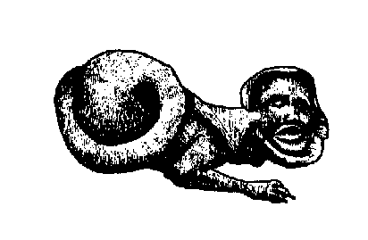

Ar Bugel Lec'hiet
Ton
Mode Hypodorien

|
1. Mari goant a zo keuziet;
He Loik ker he-deus kollet; Gant ar Gorrigan ema aet. 2. Pa'z iz evit dour d'ar stivell, Va Loik leziz er c'havell; Pa zeuiz d'ar ger eñ oa pell. 3. Al loen-mañ en e lec'h laket, E veg ken du hag un touzeg A graf, a beg heb ger ebed! 4. Ha bronn bepred ema 'klask kavoud, Hag en e zeiz vloaz ema aet. C'hoazh ne ma ket dizonet. 5. Gwerc'hez Vari war Ho tron erc'h, Gant Ho Kreadour tre Ho tivrec'h, E levenez 'maoc'h, me en nec'h! 6. Ho Mabig sakr C'hwi a virez, Me, va hini me a gollez. Truez ouzhin Mamm a druez! 7.- Ma merc'h, ma merc'h, na nec'hit ket Ho Loig ned eo ket kollet Ho Loig ker a vo kavet 8. Neb 'ra van virv e glorenn vi Evit dek gounideg un ti A lak' ar c'horrig da bregiñ 9. Pa 'n deus prezeget flemm-eñ, flemm ! Pa eo flemmet ken, a glemm Pa eo klevet, e lammer lemm" |
10. "Petra
rit-hu aze, va mamm ?"
Lavare ar c'horr gant estlamm "Petra rit-hu aze, va mamm ? 11. - Petra 'ran amañ, va mab-me ? Berviñ a ran er bluskenn-vi 'Vit an dek gounideg va zi . 12. - 'Vit dek, mamm ger, en ur bluskenn ! Gwelis vi ken gwelet yar wenn Gwelis mez ken gwelet gwezenn 13. Gwelis mez ha gwelis gwial Gwelis dervenn e koad Breizh-all Biskoazh na welis kement-all 14. - Re draoù a welas-te, va mab Da flap ! da flip ! da flip ! da flap ! Da flip ! paotr kozh ! ha ! me da grap ! 15. - Sko ket gantañ, lez-eñ ganin Ne ran-me droug da da hini 'Mañ brenin er bro-ni ganeomp-ni!" 16. Mari d'ar gêr pa zistroas He bugel kousket a welas En e gavell, ha sioul eas 17.Hag outañ ker kaer pa selle Ha da voket de'añ paz ae E zaoulagad a zigore 18. En e goazez 'n em save He zivrec'hig de'i astenne "Gwall-bell on bet kousket, mamm-le!" |
Kempennet gant Friedrich Silcher, 1841